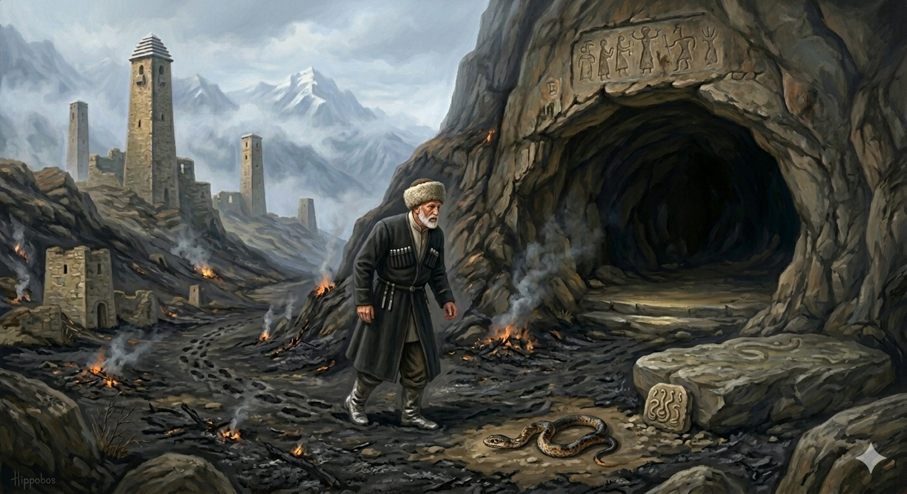

И.А. Дахкильгов. Хьехаме дувцарш - поучительные рассказы-притчи.
И.А. Дахкильгов. Хьехаме дувцарш - поучительные рассказы-притчи. Из ингушского фольклора.

Са даьй мохк ба ер
Дуне т1а са мел долча х1аман мотт ховш хиннав Сулейма-пайхамар. Кхалаж даьккха, йоарх1аш яьнна дола лаьтта ц1енде дагадеха хиннад цунна. Д1акхайкадаьд цо: "Дийна мел дола х1ама укхазара даьнна д1аг1олда, укх метте йоккха ц1и яргья”. Са доаллаш мел хинна х1ама д1адаха хиннад. Ц1и техай. Доагаш мел дола х1ама даьга д1адаьннад. 1овкъара даьккхача лаьтта г1олла д1аводаш, Сулейма-пайхамара б1аргабейнаб ах баьга, ц1увзаш улла текхарг. Хаьттад пайхамара: - Ц1и тохаргья, д1адаха деза ма аьннадарий. Д1а х1ана баханзар хьо? Аз кхайкадаьр хазанзарий хьона? - Дика хезадар. Са ворхх1е да ваьхав укх лаьтта. Ер сай дай мохк а бита д1а мишта бодар со? Маганзар сона д1аг1о, - аьннад текхарго.
РУССКИЙ
Это моя родина
Пророк Сулейман, как известно, знал языки людей и всех животных. Однажды он решил очистить место, которое заросло буръяном и было загажено. Пророк Сулейман приказал всем проживавшим там тварям покинуть это место, так как он пустит по нему огонь, который все очистит. Все животные разбежались, и пророк пустил огонь по этой местности. Когда все сгорело, Сулейман вдруг услышал жалобные стенания. Глянув на землю, он увидел полуобгоревшую змею. - Почему ты не покинула это место? Разве ты не слышала моих предупреждений? – спросил пророк. - Слышала я твои предупреждения, но в этом месте прожили семь колен моих предков. Как же я могла покинуть свою родину? Не смогла я уползти с нее, - ответила змея.
ENGLISH
This is my homeland
As is well known, the Prophet Solomon could understand the languages of humans and animals alike. One day, he decided to clear an overgrown, rubbish-littered area. He ordered all the creatures living there to leave, as he was going to set fire to the area to clear it. The animals scattered and the prophet set fire to the area. Once everything had burned down, he suddenly heard plaintive moans. Glancing at the ground, he saw a half-burnt snake. “Why did you not leave this place?” Did you not hear my warnings?” he asked. “I heard your warnings,” replied the snake, “but seven generations of my ancestors lived in this place. How could I leave my homeland? I could not bring myself to slither away from it,” replied the snake.
НОХЧИЙН
Сан дай мохк бу х1ар
Дуьненна т1е са мел долчу х1уманан мотт хууш хилла Сулейман-пайхамар. Кхеллеш йаьккхина, яраш йойлла долу латта ц1андан дагадеан хилла цунна. Д1акхайкхина цо: "Дийна мел долу х1ума кхузара даьлла д1аг1ойла, кху метте йоккха ц1е йер йу”. Са доллуш мел хилла х1ума д1адахна хилла. Ц1е тоьхна. Догуш мел долу х1ума даьгна д1адаьлла. Чим хилла лаьттехула д1авоьдуш, Сулейма-пайхамара б1аьрга байна ах баьгна, ц1ийзаш 1уьллу текхарг. Хаьттина пайхамара: - Ц1е тухур йу, д1адаха деза ма аьллера. Д1а х1унда баханзар хьо? Ас кхайкхинарг хезна дацар хьуна? - Дика хезна дар. Сай ворх1е да ваьхна кху латта. Х1ара сай дай мохк а битина д1а муха бодар со? Маганзар суна д1аг1уо, - аьлла текхарго.
ПОГОВОРКИ